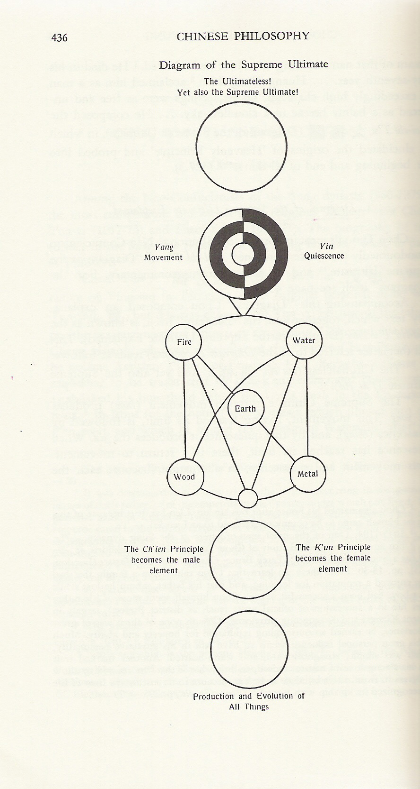
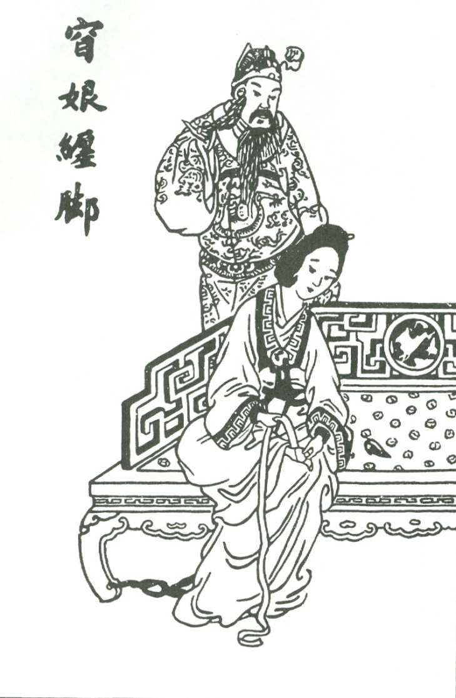
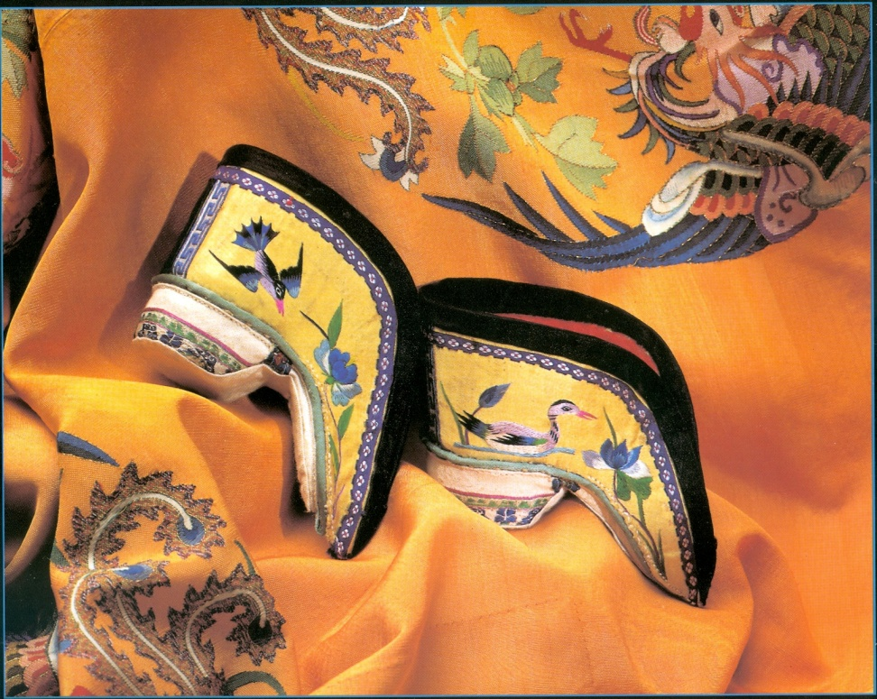
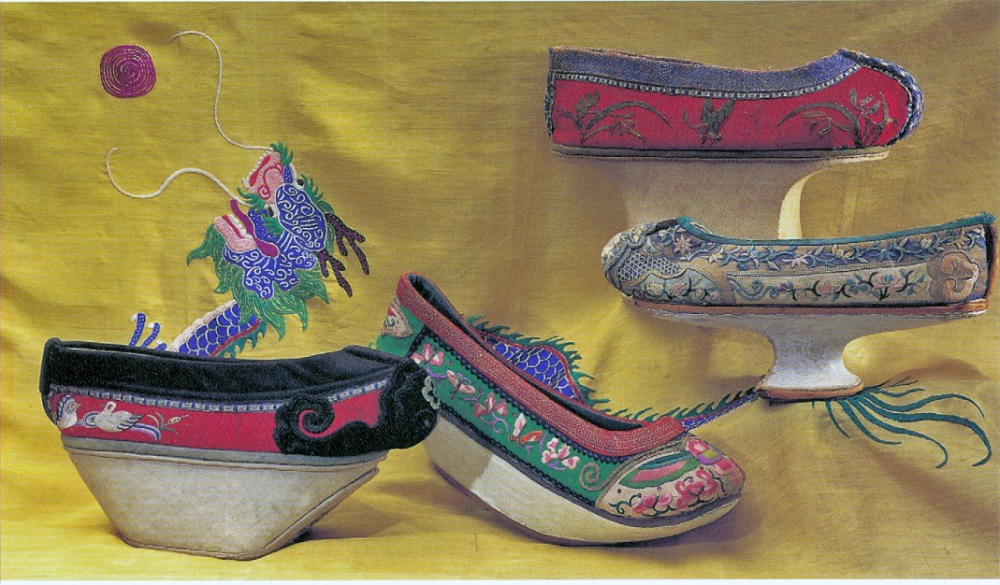
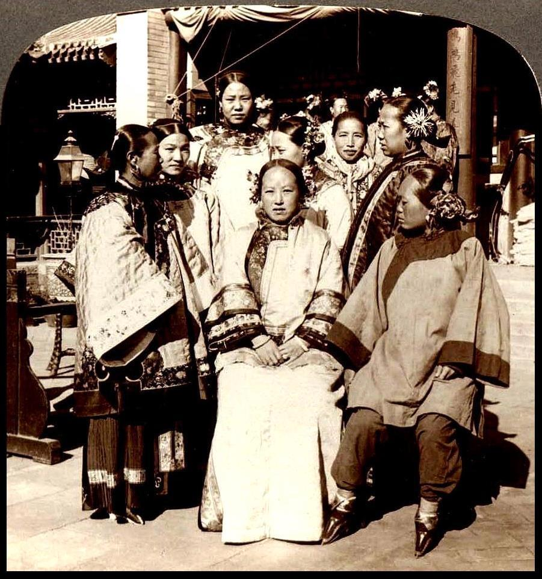
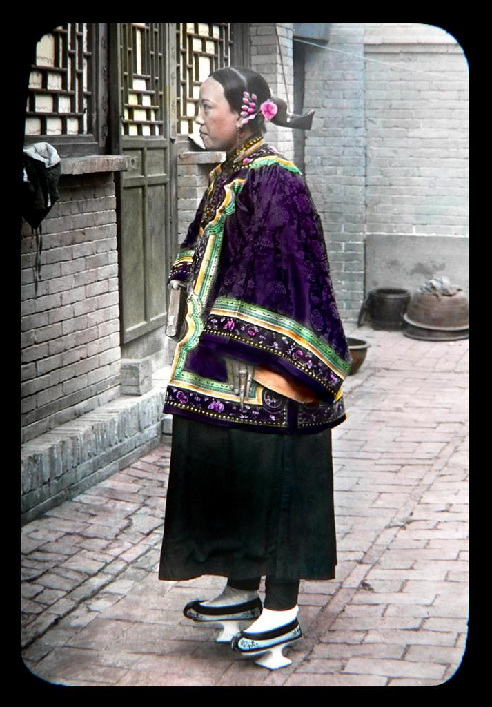
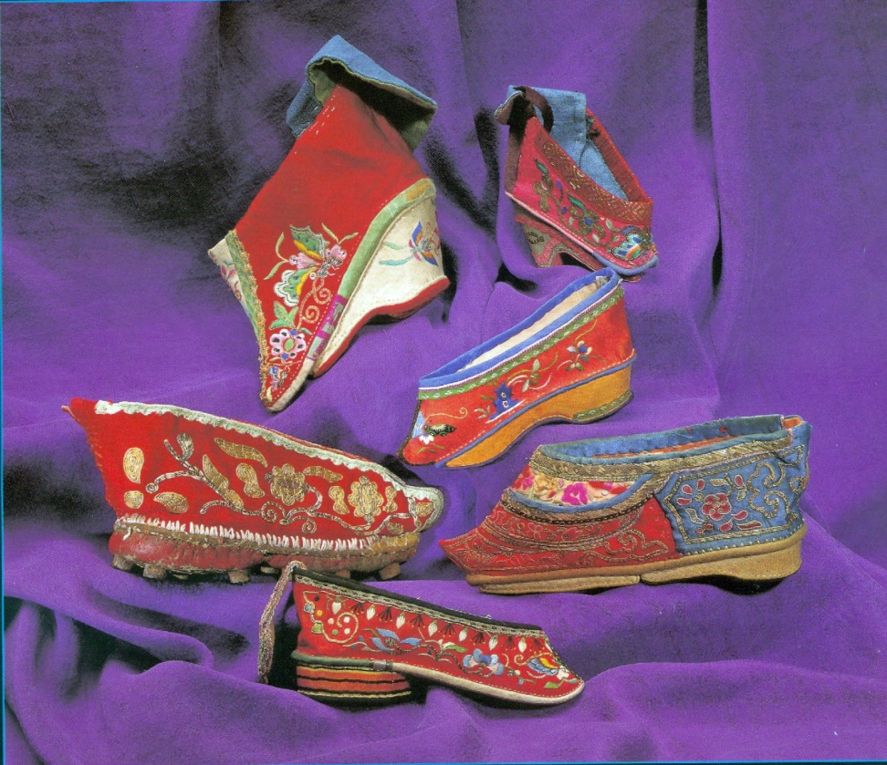
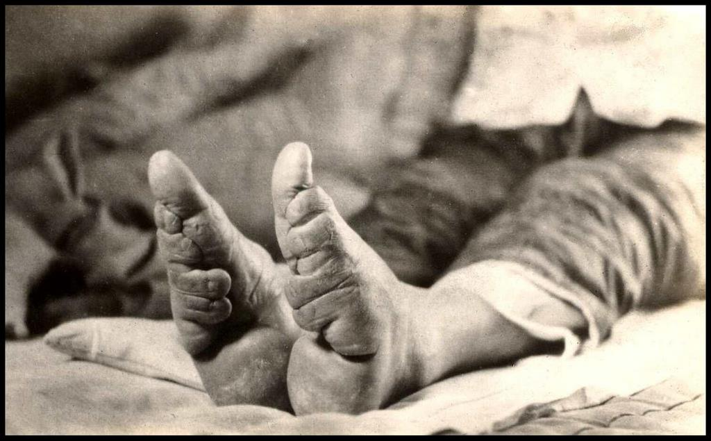
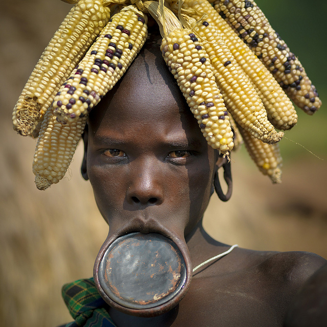
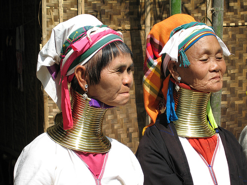

Occupied 16 prefectures on Chinese side of Great Wall
Treaty of 1005 provided for cession of territory back to Song; Song sent Liao contributions of silk and silver (“bought off”)
Tribute was humiliating but cheaper
Song’s Rivals: Liao
Khitan were a proto-Mongol people
Abaoji (d. 926) unites several Khitan tribes and dominates the steppe
Sets aside traditional Khitan practice and instituted hereditary succession
Dual Government
Southern section governed on the basis of Chinese traditions
Khitan imperial relatives granted fiefs
Northern Section allowed Khitans to maintain tribal organization and resist sinification
Origins of the Tangut People
The Tanguts were a nomadic people from the Tibetan plateau.
They migrated to northern Shaanxi and Gansu due to pressure from Tibet.
By the 9th century, they gained control of trade routes and consolidated power.
Rise of Xi Xia
Under Li Yuanhao (r. 1032–1048),
Created a federation of tribe; Xi Xia declared sovereignty.
Yuanhao demanded recognition from the Song Dynasty.
The Tangut state became fully established as Xi Xia.
Xi Xia’s Political Structure and Governance
Blended elements from Tang, Song, Liao, Uighur, and Tibetan models.
Confucian statecraft mixed with a strong Buddhist religious foundation.
A unique Tangut script was developed to preserve cultural identity.
Relations with the Song Dynasty
Initial conflicts between Xi Xia and the Song.
The 1044 Treaty: Song agreed to annual payments to Xi Xia.
Tanguts saw the payments as a recognition of sovereignty.
A New Era
The pace of change was rapid from the late Tang into the early Song period, and by the mid-eleventh century, China in many ways was a much more modern society, with cities and commerce transforming its economy and printing and examinations transforming elite culture.
The Medieval Chinese Economic Revolution: Agriculture
Population Growth and Agricultural Advancements
50 million to 100 million by 1102
Expansion of rice cultivation and multiple harvest
Commercialization of agriculture
Commercial crops
Surplus and Trade
Stimulates transportation and shipping industries
Demand for money grows – Copper coins, worlds first paper money, Government issued paper currency
The Medieval Chinese Economic Revolution: Industry
Industrial Growth and Technological Advancements
Iron Production
Coke and Metallurgy
Mass Production
Gun Powder
Growth of Commerce and Urbanization
Great Cities – Kaifeng and Hangzhou
Guilds and Specialization
Abolition of Curfew
International Trade
Trade connected all states in region
Stimulated by indemnities paid by Song
Trade goods included: China exported tea, silk, coins, paper and books, porcelain, spices, etc. China imported silver, horses, cotton cloths, gems, and perfumes
Maritime trade exceeds overland trade
Growth of the Scholar-Official Class
Expansion of the Educated Class and the Role of Printing
The Civil Service Examination
Increased participation
Multiple Attempts
Meritocracy vs. Privilege: 40% of posts were still filled by nominations
Social Mobility
Reformers and Anti-Reformers
Examination system did not unify scholar officials
Fan Zhongyan: “to be first in worrying about the world’s troubles and last to enjoy its pleasures.”
Submitted 10 point memorial: Reforms to recruitment, Higher pay to discourage corruption
Wang Anshi (1021 – 1086)
Political Reformer of the Song Dynasty
Implemented the New Policies (or New Laws) under Emperor Shenzong
Aimed to improve governance, reduce burdens on the poor, and strengthen the state
Notable Reforms:
Green Sprouts Program: Low-interest loans to farmers to prevent exploitation by private lenders
Tax and Labor Reforms: Reduced corvée labor and restructured the tax system
Military Reforms: Strengthened the army through professionalization and better training
Educational Reforms: Emphasized practical governance skills in the civil service exams
After Shenzong’s Death (1085)
Conservative Backlash: Empress Dowager Xuanren and Sima Guang led the conservative faction
Repeal of Reforms: Many of Wang’s policies were reversed, returning to traditional Confucian methods
End of Reform Era: Focus shifted away from interventionist policies to preserving social order
Wang’s Retirement and Death: Wang Anshi retreated from politics and died in 1086, with his reforms largely undone
The Fall of the Northern Song Dynasty (960–1127)
Internal Weaknesses: Economic strain due to bureaucratic inefficiency and corruption; Weak, poorly trained military; Overreliance on diplomacy (e.g., Heqin strategy with Liao and Jin)
External Threats: Rise of the Jin Dynasty (Jurchens) in 1115; Jin-Song alliance to defeat Liao turned into betrayal
Jingkang Incident (1127): Jin forces captured the Song capital, Kaifeng; Emperor Huizong, Emperor Qinzong, and royal family members were taken as prisoners
Aftermath: Southern Song Dynasty (1127–1279) established by Emperor Gaozong in Lin'an; Loss of northern territories but continued cultural and economic growth in the south
Hangzhou and Southern Song
Hangzhou established as Capital
Located near Grand Canal and Yangzi River Delta
Military Challenges
Economic Prosperity
Cultural Flourishing: Printing, Porcelain and art
Hangzhou grows into bustling metropolis, over 1 million people
Advancements in technology
Neo-Confucianism
Learning of the way
Revival of Confucianism and the Learning of the Way
Resurgence of Confucian thought during the Song Dynasty.
Sought a return to the “ideal” past (fundamentalism).
Absorbed the metaphysics of Buddhism but remained this-worldly.
Western term: Neo-Confucianism
Factors Behind Revived Interest in Confucianism
Turning inward after losing battle with northern “Barbarians”
Political disillusion during Five Dynasties
Influence of Buddhism
Many Neo-Confucian thinkers were students of Buddhism or Monks
Absorbed Buddhist metaphysics
Metaphysics: study of nature of being, existence, time, space, and causality.
Neo-Confucians and their Thought
Han Yu & Li Ao (fl. 9th century)
Forerunners of Neo-Confucianism
Criticized Buddhism
Emphasized Human Nature
Quoted from the Great Learning & The Mencius
Correct Transmission
Neo-Confucians and their Thought
Multiple Schools – Li Xue, Xin Xue
Zhou Dunyi (1017-1073)
Influenced by Taoism and the I Qing
Made extensive use of Tai-qi (Supreme Ultimate)
Neo-Confucians and their Thought
Cheng Hao & Cheng Yi
Students of Zhou Dunyi
Principle
Quoted from Doctrine of the Mean
Four Books: Analects, Mencius, Great Learning, Doctrine of Mean
Neo-Confucians and their Thought
Zhu Xi (1130-1200)
Synthesize
Expurgate
Monistic-dualism
Cultural Stability
Exported to Korea & Japan
Footbinding
A National Fetish
Footbinding
“Golden Lotus” – A three inch foot
Process begins from ages 5 – 7
Two year process
Risk of Sepsis and Death
Upward Marriage and the sexualization of the foot
In Her Own Words
Origins
Origins lost to history
Only legends remain
Fox Fairy (Xia)
Yang Guifei (Tang)
Yao Niang (Five Dynasties)
Literature and paintings indicate practice is widespread by the Northern Song
Yao Niang Binds her Feet
History
By Ming dynasty, spreads throughout China
Measurement of beauty and status symbol
Marker of hierarchy
Chance for upward marriage
By the end of the dynasty, custom spread to lower class women
Essentially a Han practice
Hakka and other minorities did not bind feet
Footbinding and the Qing Dynasty
Qing (Manchu) Dynasty bans footbinding
Like the queue, attempt to force assimilation into Manchu culture
Ban fails among Han Women
Manchu women attempt to mimic “Lotus gait” with special shoes
Manchu Women
Image from original presentation
A National Fetish
Linkage to marriage and male sexuality accounts for longevity
Bindings create taboo
Taboo sexualizes foot
Parallel to female breast in West
Becomes widespread fetish
Even shoe becomes object of masturbatory fantasy
Unbound foot becomes sex object during intercourse
“A plain face is given by heaven, but poorly bound feet is a sign of laziness.”
Anti-Footbinding Movement
19th century reformist scholars criticize foot-binding
Patriarchal oppression and Subjugation of women
Host demonstration exposing unbound feet; draws 1000s
Joined by Christian Missionaries
Republican China bans footbinding, imposing stiff fines
Women continue to bind feet in secret
Judgements
Cultural Relativism?
History of Body Modifications
Lip plates, head bindings, male circumcision, and female genital mutilations, piercings and tattoos

Image from original PowerPoint
Image from original PowerPoint

Image from original PowerPoint

Image from original PowerPoint
Judgements
Cultural Relativism?
History of Body Modifications
Lip plates, head bindings, genital mutilations
Western aesthetic body modifications
Corsets
Breast augmentations
High heels most parallel to footbindings

Effects of high heels on the body
Morton’s neuroma
Excessive force on inside of knee
Calf muscles shorten and tighten
Bunions = boney growth
Pump bump
Ankle injuries
Metatarsalgia – pain in ball of foot
Hammertoe – 3rd and 4th toe unable to straighten
Accentuates posterior for male gaze

Judgements
Cultural Relativism?
History of Body Modifications
Lip plates, head bindings, genital mutilations
Western aesthetic body modifications
Corsets
Breast augmentations
High heels most parallel to footbindings
Only different by degree


Image from original presentation

Image from original presentation

Image from original presentation

Image from original presentation
Vocabulary & Key Terms
Song Dynasty: Chinese dynasty 960–1279, divided into Northern and Southern.
Liao: Khitan dynasty that controlled northern territories and received tribute.
Xi Xia (Tangut): Northwestern state that extracted payments from Song.
Wang Anshi: Song reformer of the New Policies under Emperor Shenzong.
Neo-Confucianism: Song revival of Confucianism incorporating Buddhist metaphysics (Zhu Xi).
Footbinding: Practice of binding girls' feet for aesthetic and status reasons, widespread by Song/Ming.